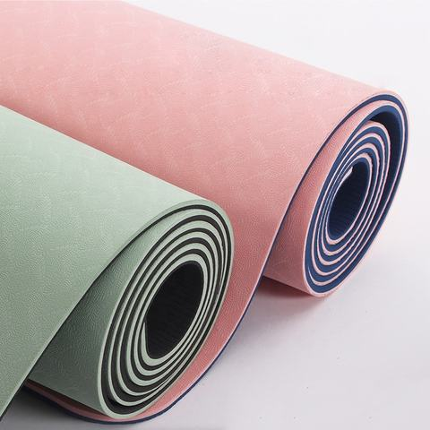

Ökologische zweilagige „TPE“-Bänder, rutschfeste, strukturierte Oberfläche, Breiten 61–122 cm, Stärken 4–12 mm. Standard-, Economy- und Spezialausführungen.
| Material | TPE (eco-Doppelschicht) |
|---|---|
| Größe | 1830×610 / 1830×800 / 1850×900 / 2000×1000 / 1850×1220 mm |
| Dicke | 4–12 mm |
| Mindestbestellmenge | 100 Stück |
| Farben & Druck | Individuelle Farben und Drucke |
| Einhaltung der Vorschriften | REACH, CA Prop 65, 6P/7P, ISO 9001, BSCI |
| Verpackung | Schrumpffolie + Karton |
Unsere meistverkaufte, umweltfreundliche Yoga-Matte „TPE“ besteht aus einem zweilagigen, rutschfesten Material, das leicht, recycelbar und frei von „PVC“ sowie giftigen Gerüchen ist. Eine zuverlässige Wahl für Studios, Fitnessstudios und Eigenmarken.
Umfassende OEM/ODM-Unterstützung: Material, Größe, Stärke, Farbe, zweifarbige Ausführung, Logodruck, Prägung und Verpackung. Physische Muster nach Ihren Vorgaben innerhalb von 7 Tagen fertiggestellt.
Ideal für Yogastudios, Fitnessstudios, Hot-Yoga-Kurse, den Einzelhandel unter Eigenmarken sowie als Werbegeschenke.

Extrabreite 80/122 cm-Matte „TPE“ für dynamisches Training und Partnerübungen; mit dem gleichen umweltfreundlichen zweilagigen Griffbelag.

TPE-Matte im Großformat für Paare und Familien; rutschfest, leicht zu reinigen.

Das dreifach gefaltete Design lässt sich flach ausklappen, ohne dass sich die Kanten wellen; „6 mm“-Polsterung; äußerst handlich, passt in einen Rucksack.

Unterlage aus Naturkautschuk + rutschfeste Oberfläche mit „PU“-Technologie; erstklassiger Halt für Hot Yoga und Studios (die „Premium“-Matte).
Fordern Sie noch heute ein individuelles Angebot an und besuchen Sie kostenlose Muster.
Kontaktieren Sie unser Team